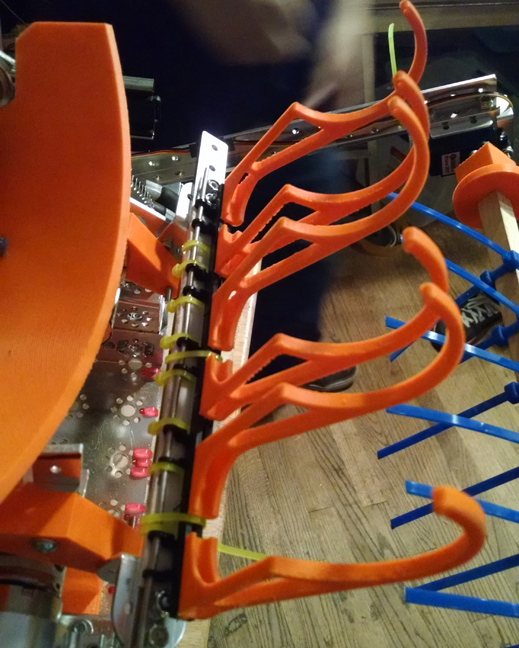
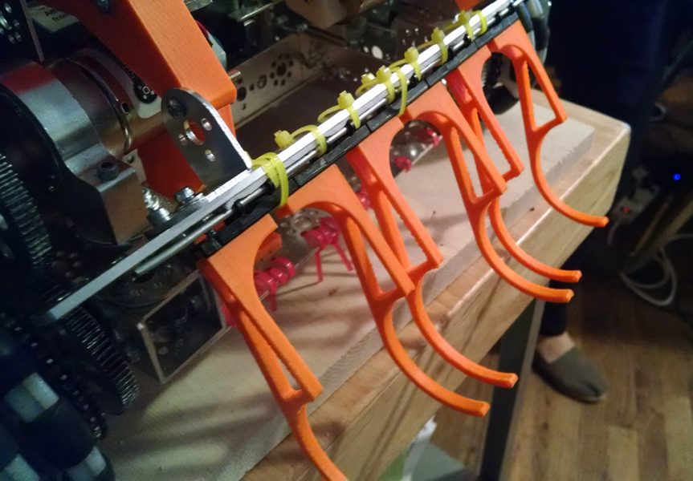

Written by Jayesh Sharma

Task: Make a new intake method for the balls
Our old beater bar intake for the game was deemed too big for our new scissor lift idea. Our new claw has a simple toggle set in the code:
if (!(joy2Btn(8) == 1))
{
servoTarget[Claw] = 255;
}
else {
servoTarget[Claw] = 100;
}
This allows for a simple hold of right trigger to keep the claw up, This allows for rapid intake(which was discussed in an earlier blog entry).

Reflections:
Our new designs and code are all coming together, constantly increasing our arsenal for use in the robot game. Our main goal of getting a rapid intake with contantly scoring balls (hopefully in the 90)
is a lot easier with the new claw. The simple code creation and output also gives a low margin of error.